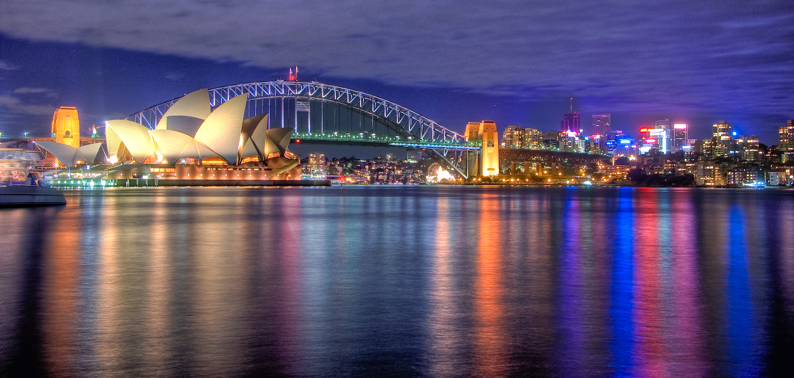

A to Z Search
Barcelona
Budapest
Cuba
Greece
Helsinki
Hong Kong
London
Maldives
Maui
Paris
Prague
Sydney
Taiwan
Vancouver
Venice
|
Sydney
Country: Australia
Rank:7
Tag:Nature, Adventure, Family

Is the grass always greener on the other side of the fence? Peek over the
pickets and find out. This vast country is affluent, multicultural and laced
with natural splendour.
People who have been to Maldives:
-
By Charles Rawlings-Way, Meg Worby, Writers:
I've been living in this great southern land for 30-something years, and there
are still places I haven't explored. Australia is just so damn big. Even if we
spent the next 30-something years on an endless round-Australia road trip,
there'd still be surprises out there. And that, for a restless road-addict, is a
very comforting reality.
reviewID:r7
Highlights:
-
Hip Cities
Most Australians live along the coast, and most of these folks live in cities –
89% of Australians, in fact. It follows that cities here are a lot of fun.
Sydney is a glamorous collusion of beaches, boutiques and bars. Melbourne is all
arts, alleyways and Aussie Rules football. Brisbane is a subtropical town on the
way up; Adelaide has festive grace and pubby poise. Boomtown Perth breathes West
Coast optimism; Canberra transcends political agendas. While the tropical
northern frontier town of Darwin, and the chilly southern sandstone city of
Hobart, couldn't be more different.
-
It's a Wide Open Road
There's a heckuva lot of tarmac across this wide brown land. From Margaret River
to Cooktown, Jabiru to Dover, the best way to appreciate Australia is to hit the
road. Car hire is relatively affordable, road conditions are generally good, and
beyond the big cities traffic fades away. If you're driving a campervan, you'll
find well-appointed caravan parks in most sizable towns. If you're feeling
adventurous, hire a 4WD and go off-road: Australia's national parks and secluded
corners are custom-made for camping trips down the dirt road.
Things To Do:
- Sydney Opera House
telephone: +61 292507250 address: Bennelong point, Sydney, Australia gettingThere Train: Circular Quay moreInfo: www.sydneyoperahouse.com openHours: tours 9am-5pm
People who like this place also like to go to:
Maui
Vancouver
source:
Lonely Planet:
www.lonelyplanet.com/australia
|